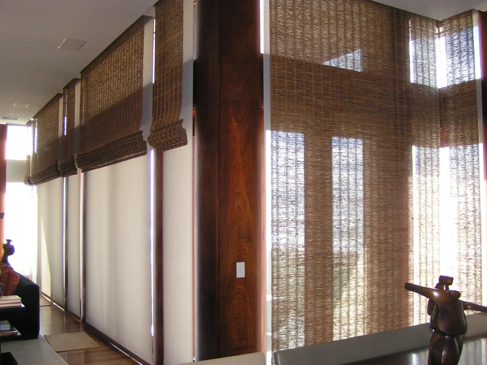

Window shade installation in Seattle
Steve Hewitt installs Roman, roller and woven shades for Greater Seattle designers and architects. For motorized shades, share the power and control specifications early so mounting positions and site preparation can be discussed together.
Installing window coverings since 1997. Wholesale to the trade only.

Planning for the specified shade
Roman shades
Send the mounting specification, finished dimensions and details of how the Roman shade is intended to sit at the window. The raised fabric and its relationship to the opening are useful points to discuss, particularly where a shade shares space with drapery or needs clearance above a door.
Roller shades
Include the product's bracket and headrail or cassette details, along with the intended inside or outside mounting position. Photos of handles, trim and nearby fixtures help explain the available space. For several adjacent shades, identify the alignment the design calls for across the openings.
Woven and layered treatments
Share the full treatment specification, including any lining and adjacent curtains or drapery. Installation planning should consider how the layers occupy the opening and where the user will access each control. You can also review the drapery and curtain installation page when the project combines fabric panels and shades.
Motorization & automation
For motorized shades, send the manufacturer, motor and control system details before setting an installation date. Identify the specified power source and any requirements for remotes, hubs or integration with another system. This lets Steve discuss the installation scope and what needs to be ready on site.
Compatibility, programming and any coordination with other trades depend on the equipment and project. Confirm those details directly with Steve; do not assume that a particular brand, control platform or electrical task is included without reviewing the specification.
Project questions
Can Steve install designer-specified shades?
That is the focus of the service. Send the treatment details, window information and project location so Steve can review the installation requirements with you.
What should I provide for a motorized project?
Include the product and motor specifications, control method, power arrangement and number of shades. Mention any planned automation integration and ask Steve to confirm the work and coordination required before scheduling.
Are shades and blinds the same installation inquiry?
Both are window coverings, but their hardware and controls can differ. The product specification is more useful than the category alone. For a project specifying blinds, see blind installation in Seattle.
Plan your shade installation
Serving the Greater Seattle metropolitan area. Contact Steve with the shade specifications, number of openings and preferred timing to discuss availability and pricing. Wholesale to the trade only please.